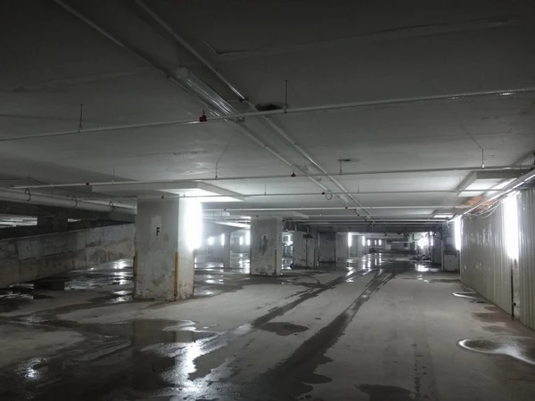

Niveau 1
NOCLIP Experience est un site web immersif dans lequel vous découvrirez les secrets du mystérieux et terrifiant univers des Backrooms.
Les Backrooms sont une légende urbaine créée sur internet ne cessant d’évoluer chaque jour grâce à la créativité des internautes du monde entier. Il existe des milliers de Backrooms, toutes plus mystérieuses et plus dangereuses que les autres.
Passer sur ordinateur pour une expérience complète
Si vous êtes imprudents et que vous finissez par noclip en dehors de la réalité aux mauvais endroits, vous finirez dans les backrooms. là où il n’y a que la puanteur des vieux tapis humides, le monochromes jaunes sur tous les murs, le bourdonnement incessant des lampes éléctriques au plafond, piégé dans des milliards de kilomètres carré de pièces vides aléatoirement ségmentées.
Que dieu vous protège si vous entendez quelque chose errant près de vous, parce qu’il est certain que ça vous a entendu aussi.
Les backrooms sont une légende urbaine de type horrifique, dite également creepypasta , faisant ainsi partie d’une grande lignée de légendes créées sur internet par les internautes du monde entier.
Né le 14 mai 2019 sur le réseau social 4chan , l’univers des backrooms est devenu l’un des plus grands projets collaboratifs d’internet de ces 4 dernières années.

Tout a commencé avec le post d’un utilisateur anonyme qui demandait aux internautes de partager les images les plus dérangeantes et malaisantes qu’ils pouvaient trouver.
Un membre du réseau social répond à la requête et poste alors cette image :

La photo représente une pièce vide - potentiellement un bureau abandonné - aux murs revêtus de papier-peint vieillot et jaunâtre, avec un sol couvert d’une moquette jaune, et un faux plafond soutenant des lampes bruyantes et clignotantes.
L’utilisateur ayant posté l’image explique également que cette pièce regorge de créatures et autres entités étranges qui ne veulent pas du bien aux imprudents qu’elles rencontrent sur leur chemin.
“si vous êtes imprudents et que vous finissez par noclip en dehors de la réalité aux mauvaix endroits, vous finirez dans les backrooms,[...]”
L’anonyme ajoute que l’endroit est uniquement accessible en “noclippant” de la réalité , un terme issu du monde des jeux vidéo et utilisé lorsqu’un joueur parvient à accéder à un niveau caché de la map principale.
Le diffuseur de l’image applique ici le concept - qui signifie littéralement “traverser les textures” - au monde réel, en nous expliquant qu’on ne peut se retrouver dans cette pièce angoissante qu’en “traversant” la réalité, mais dans ce cas-ci, de manière involontaire.

L’histoire inventée autour de cette image va être partagée massivement et agiter les internautes, qui vont décider d’appeler le lieu “backrooms”.
Mais au-delà de la notoriété que ce monde imaginaire va connaître, c’est un véritable projet collaboratif qui se crée autour de celui-ci, dans lequel les internautes créatifs ajoutent des nouvelles pièces et histoires à l’univers, ayant chacune leurs spécificités .
Les étages qui composent les backrooms, possèdent une caractéristique commune. Ils utilisent en effet presque tous une esthétique dite “liminale” , c'est-à-dire qui représente des espaces ayant des caractéristiques telles que des grands espaces vides et répétitifs , donnant une sensation de déjà vu à tous ceux qui s'y aventurent.
On compte maintenant plus de 2000 niveaux différents documentés dans un wikidot dédié au sujet.

et avec ces derniers, des miliers d’entités hostiles ...
Malgré l’engouement autour des backrooms, la tendance redescend petit à petit et on n’entend plus vraiment parler de cette creepypasta…
Jusqu'en 2022
En janvier 2022, Kane Pixels , un jeune vidéaste et artiste VFX, poste une vidéo intitulée “Found Footage”…
Kane Pixels, à ce moment-là, n'a que 16 ans mais nous montre ses compétences en 3D et VFX presque professionnelles en nous invitant dans l’endroit le plus mystérieux d’internet à la manière de témoignages filmés avec une caméra vhs.
Grâce au travail du youtubeur, les backrooms vont alors connaître une renaissance et la série de vidéos de Kane Pixels sur le sujet deviendra une des séries horreurla plus virale qui n’a jamais existé sur Youtube.